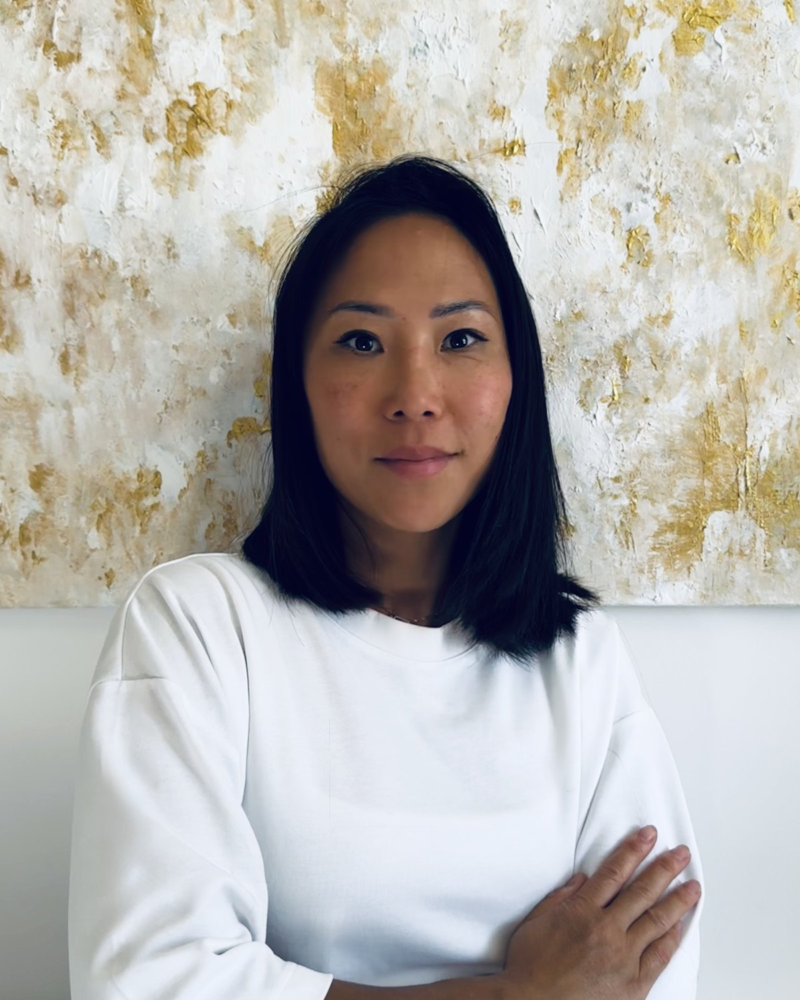

Le massage haute couture,
chez vous
Votre parenthèse bien-être et longévité
Ou dans mon cabinet du 7e arrondissement.
Soins du visage
Aucun protocole standard
Chaque soin commence par un diagnostic morpho-facial. Votre visage, vos tensions, votre peau. C'est lui qui décide du protocole.
Massage ancestral favorisant la fermeté, stimulant le tonus musculaire et tonifiant le galbe du visage.
Massage profond et étirements musculaires pour détendre les tensions faciales et lisser les traits.
Massage drainant doux favorisant l'élimination des toxines, le désengorgement des tissus et la clarté du teint.
Combinaison personnalisée de toutes les techniques facialistes pures, pour redessiner l'ovale du visage, stimuler le collagène et raviver l'éclat en profondeur.
Tarifs pour un rendez-vous dans le 7e arrondissement. À votre domicile, supplément de 30 € par séance. Tous les soins intègrent le diagnostic morpho-facial ainsi que les rituels de préparation et de fin de soin.
Cures & accompagnements
Ce que la régularité change
Le massage du visage donne un résultat visible dès la première séance. C'est la répétition qui l'installe dans la durée.
3 séances de 60 min
Pour initier le renouvellement et relancer les fonctions cellulaires.
330 €5 séances de 60 min
Programme optimal pour ancrer les bénéfices musculaires dans la durée.
550 €Chez vous
Vous n'avez rien à préparer
C'est la question que l'on me pose le plus souvent avant une première séance. Voici exactement comment cela se passe.
- L'arrivée
Table, linge de soin et huiles voyagent avec moi. Il me suffit de deux mètres carrés au calme, dans le salon ou dans la chambre. Vous n'avez rien à sortir ni à ranger.
- Le diagnostic morpho-facial
Quelques minutes d'échange sur votre peau, vos habitudes, vos tensions. Le protocole se décide là, et il peut changer d'une séance à l'autre selon vos besoins et vos envies.
- Le rituel de préparation
Un double nettoyage, démaquillage compris. Une première phase pour dissoudre le maquillage et les impuretés de la journée, une seconde pour nettoyer la peau elle-même. C'est ce qui permet aux manœuvres de travailler sur une peau réellement propre.
- Le massage
Avant le visage, il y a le cou, la nuque et le décolleté. Ce n'est pas un préambule. C'est là que se libèrent les tensions et que se relance la circulation, sans quoi le travail sur le visage ne donne jamais toute sa mesure. Viennent ensuite les manœuvres du visage.
- Le temps d'après
Votre visage reste tel que le soin l'a laissé. Les effets du massage continuent d'agir bien après mon départ, et le temps qui suit vous appartient.
Émilie Dubé
Le luxe, c'est l'attention
J'ai passé une quinzaine d'années dans l'hôtellerie de luxe, entre le yachting, la grande restauration et les maisons privées. J'y ai appris que ce qui distingue un service, c'est l'attention portée à quelqu'un.
J'ai repris mes études pour en faire mon métier. Titulaire du CAP Esthétique et formée aux techniques japonaises et myo-fasciales à l'Académie des Facialistes de Paris, je pratique le massage du visage comme un soin de fond. Ni protocole standard, ni promesse miracle, mais un travail manuel régulier sur les muscles, les fascias et la circulation.
Le résultat est un lift naturel, une alternative non invasive à la médecine esthétique. Rien n'est injecté, rien n'est coupé. Les effets viennent des mains et de la régularité, et ils appartiennent à votre visage plutôt qu'à un produit.
- Kobido
- Facial stretching
- Techniques myo-fasciales
- Drainage lymphatique
- Gua sha
- CAP Esthétique
- Académie des Facialistes de Paris

Rendez-vous
Écrivez-moi
Indiquez-moi vos disponibilités et le lieu qui vous convient, je vous réponds sous vingt-quatre heures.
Mes soins sont réservés à une clientèle féminine.
Paris 7e arrondissement. Tarifs de la carte.
Je me déplace avec ma table et mes produits. Supplément 30 €.